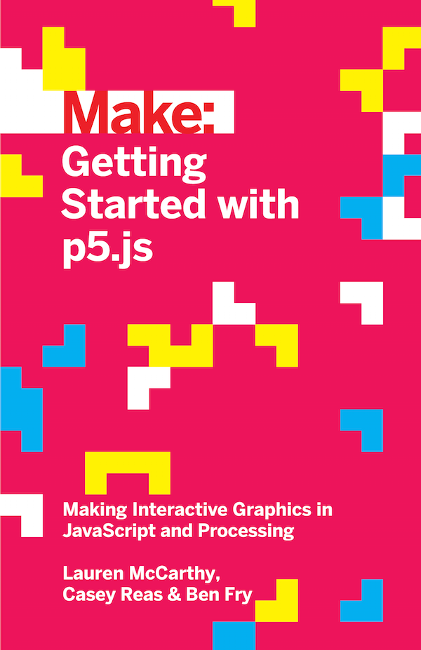

Books

Getting Started with p5.js
Lauren McCarthy, Casey Reas, and Ben Fry.
Published October 2015, Maker Media. 246 pages. Paperback.
Order Print/Ebook from O'Reilly
Order from Amazon
Written by the lead p5.js developer and the founders of Processing, this book provides an introduction to the creative possibilities of today's Web, using JavaScript and HTML. With Getting Started with p5.js, you will:
Quickly learn programming basics, from variables to objects.
Understand the fundamentals of computer graphics.
Create interactive graphics with easy-to-follow projects.
Capture and manipulate webcam audio and video feeds in the browser.